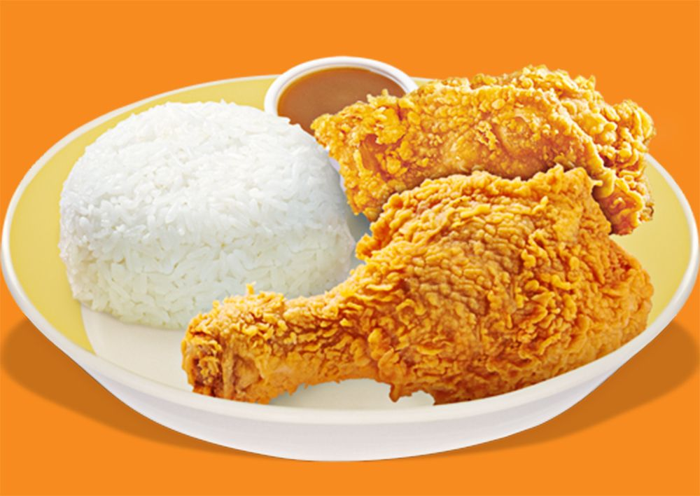
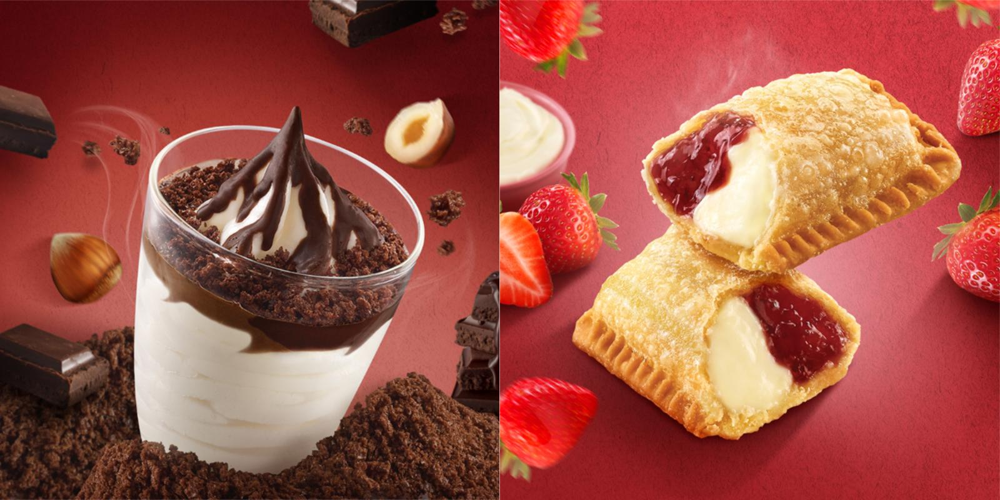

Favorite Things to eat in Jollibee mentioned in the upper section
BREAKFAST | CHICKEN JOY | DESSERTS

BREAKFAST

CHICKENJOY

Why is Jollibee so special? With a strict adherence to the highest standards of food quality, service and cleanliness, Jollibee serves great-tasting, high-quality and affordable food products to include its superior-tasting Chickenjoy, mouth-watering Yumburger, and deliciously satisfying Jolly Spaghetti among other delicious products.
Between 6 and 10 a.m. would be the ideal time to take this first meal, mainly so that you set yourself up for a second meal a few hours later. What you eat at breakfast has a large impact on the rest of the day.
Philippines' best-tasting crispylicious, juicylicious Chickenjoy that is crispy on the outside, tender and juicy on the inside.
Dessert is the sweetest course of the meal. It follows the main dish in a three-course meal. The course usually offers sweet foods, such as confections, and may include appropriate wine varietals or a liqueur.
BREAKFAST | CHICKEN JOY | DESSERTS
BREAKFAST | CHICKENJOY | DESSERTS

My go to eat whenever I want to eat a breakfast meal.

This dish is the reason why I fell inlove with Jollibee.

Whenever it is hot outside I always order this to cool down a bit.
| Comments about Jollibee |
Jollibee has "Jolibeelicious Meals".
Jollibee has "Budgetfordable Dishes".
Filipino culture is mostly family-oriented, and they promoted Jollibee's ad that way - large families would gather at the dinner table, sharing a bucket of spicy and crispy fried chicken.
This is why much of Jollibee's success is due to the way the brand perfectly embodies Filipino identity and culture.